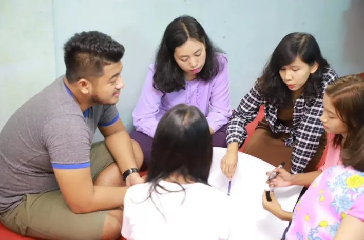
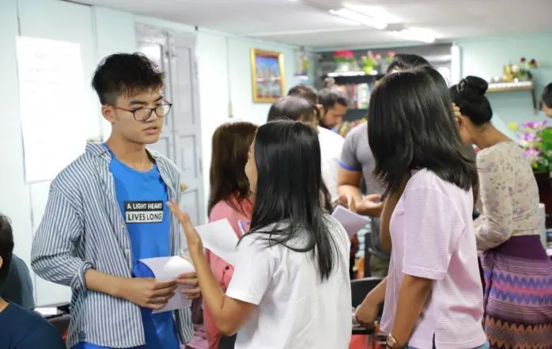
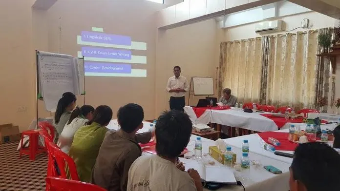
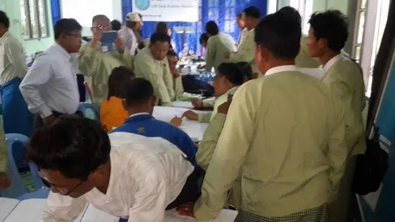
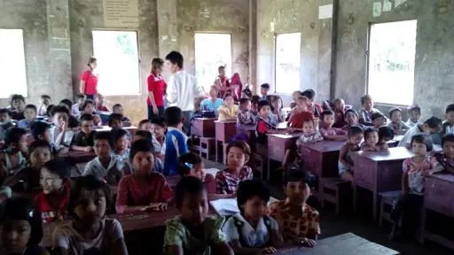

Opportunity Talks with Youth & Coordination with Government Line Agencies and Key Stakeholders
- A platform for discussing career paths, education, skills, and future prospects with young people.
- Workshops, mentorship sessions or panel discussions aimed at empowering youth by exploring opportunities in education, resource governance and public health.
- Sustainable diversified livelihood and community empowerment.




